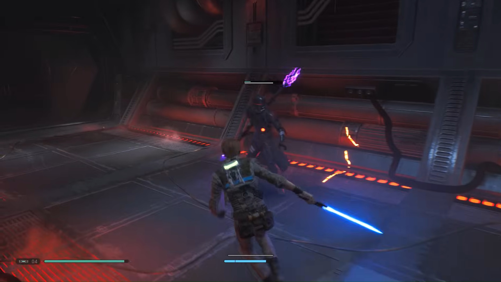
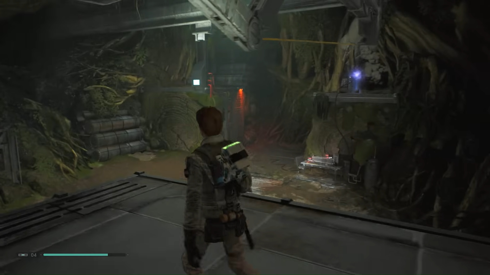

What is Jedi: Fallen Order?
The story is set in the Star Wars universe, five years after Star Wars: Episode III Revenge of the Sith. It follows Cal Kestis, a Jedi Padawan who becomes a target of the Galactic Empire and is hunted throughout the galaxy by the Imperial Inquisitors while attempting to complete his training, reconcile with his troubled past, and rebuild the fallen Jedi Order. The player can use Kestis' lightsaber and Force powers to defeat enemies, including stormtroopers, wild beasts and bounty hunters. The game adopts a Metroidvania-style level design where new areas are accessed as Cal unlocks skills and abilities.
Why Do I Like Jedi: Fallen Order?
My love for this game started before it came out, before a trailer was even announced. Since I love all things Star Wars, loving this game was a no brainer. The gameplay is great. The lightsaber combat is amazing, and the force abilities are great as well. The story is fantastic as well. Although, my only gripe with the game are the puzzles. But that may be because I am not the greatest at puzzles. I have beaten this game, and I wish to replay it soon. I also look forward to playing Jedi: Survivor later too. And with all things Star Wars I assume that a third game is planned. After all, it isn't Star Wars unless its a trilogy.
Jedi: Fallen Order Gameplay


Should You Play Jedi: Fallen Order?
If you love Star Wars then yes! One of the best Star Wars games I have played, and a very good Star Wars related media! If you aren't a fan, I would still recommned it! It has great gameplay that is very similar to a soulslike if you are a fan of those. Below is a link to the Steam Page, but it is available on all platforms, except Nintendo.
Still unsure? Here's the trailer!